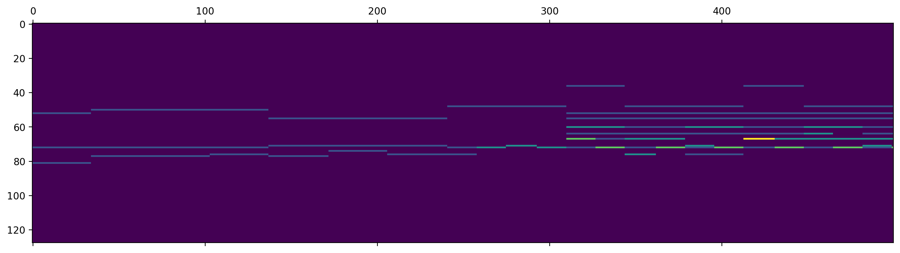
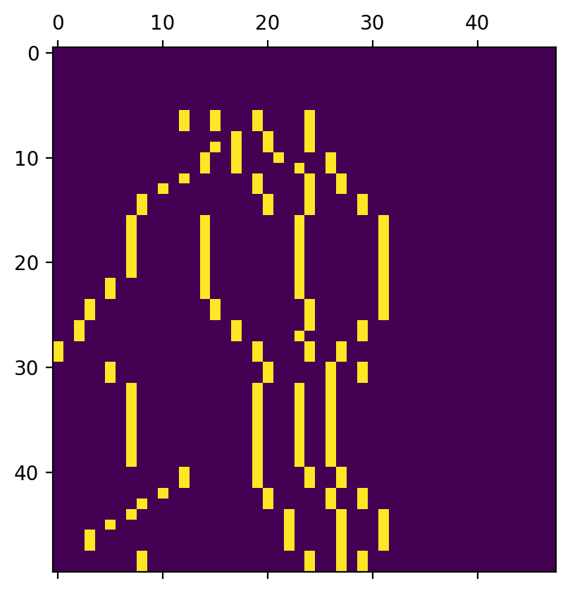
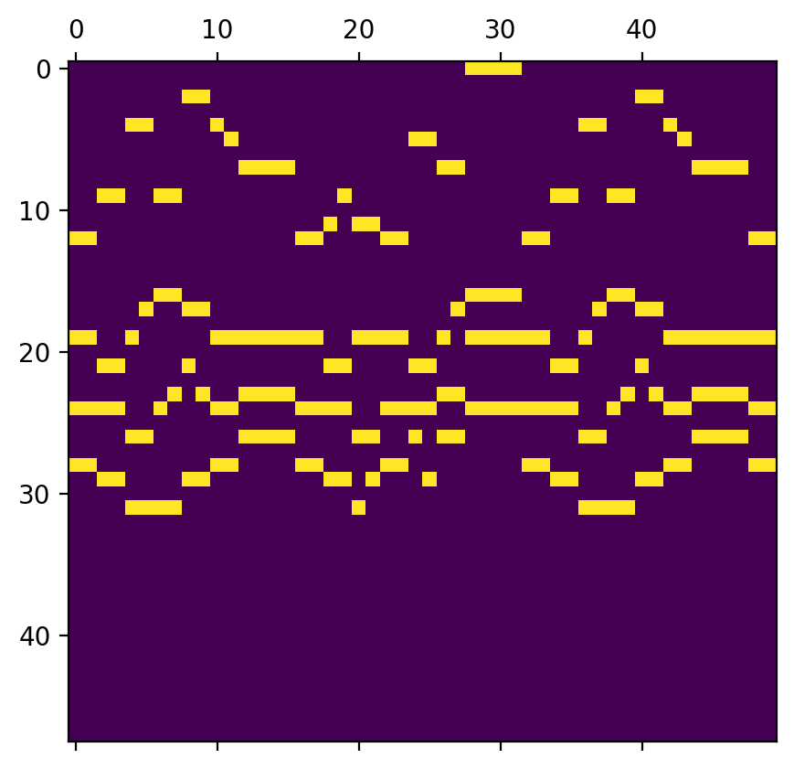
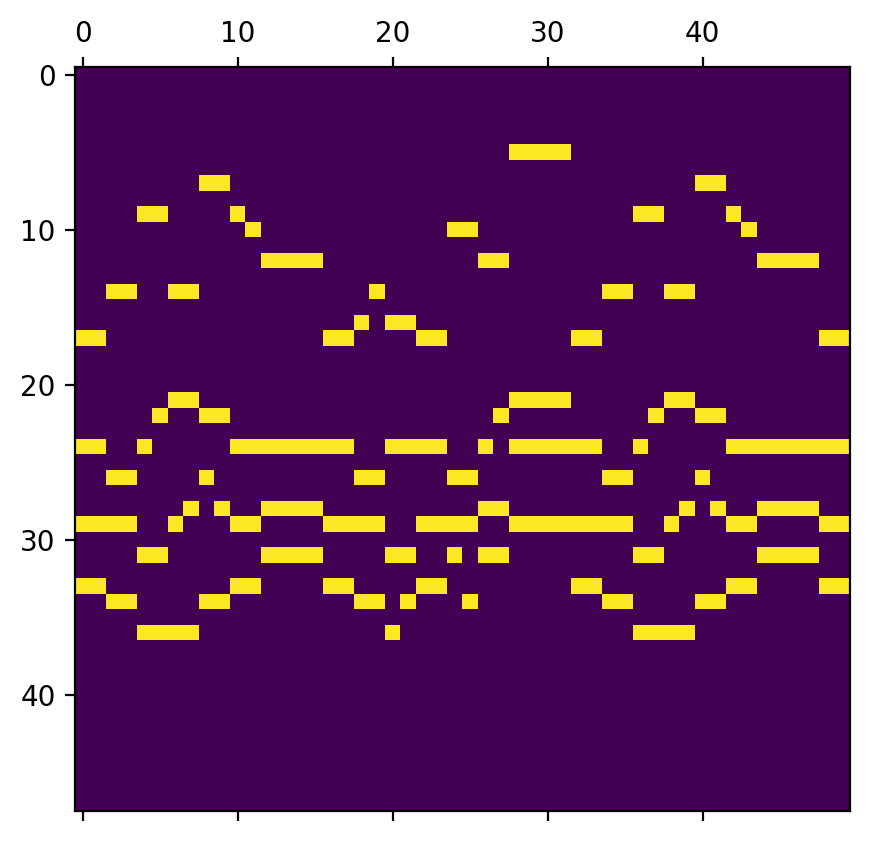

音楽生成
中華ホラーにハマってる
たまにシャレにならない怖さのものがあって興奮する
導入
いい本があった
おもしろそうなので目次だけ見てコンテンツを自分で実装してみる．
機械学習入門
まずは概観する． ここは先の書籍とは関係ない．
単純パーセプトロン
$y=f(wx+b)$ があって，$w$ が重み，$x$ が入力，$b$ がしきい値
入力 $x$ が複数次元存在し，これが重み $w$ を持って加算される． この結果 $y$ がしきい値を超えれば発火するし，超えなければ発火しない．
$f$ の活性化関数は，例えばステップ関数なら 0, 1 を出力する． でも二値しかなくて不便なのでロジスティック関数を使うこともある． 0, 1 の二値ではなくて，0, 1 の確率を出力する． 確率が 0.5 を超えれば 1 みたいなイメージ
で，これは結果出力の話で，機械学習というからには学習をする必要がある． 例えば一回目で $y_1 = f(wx+b)$ という結果が得られたとする． このとき正しい答えは $t$ であるとする． 出力が大きいときは，入力に対して小さくなるように重みを訂正する必要があるので，例えば以下のようにする $$w’ = w - (y-t)x$$ 例えば出力が大きいときは $y-t > 0$ となるので， $w-(y-t) < w$ であるから， $w’$ は小さくなる． 逆に出力が小さいときは $y-t < 0$ となるので， $w-(y-t) > w$ であるから， $w’$ は大きくなる． バイアス $b$ も同じように調整される．
ロジスティック回帰
さっきのステップ関数は二値しかないので不便だった． これを対策するために シグモイド関数を使うことがある．
$$\sigma(x) = \frac{1}{1+e^{-x}}$$
こうすると 0, 1 の間がなめらかに接続される． つまり，0, 1 の間で確率が出力され，0.5 を超えれば 1 に近くなる．
このロジスティック回帰で使われる学習は尤度関数を使っている． 入力 ($x_1, x_2, …, x_n$) に対して正しい出力を得られる確率を ($p_1, p_2, …, p_n$) とする． このとき $p_1 p_2 … p_n$ が最大になるように重みやバイアスを学習する．
$$\Pi^N_{n=1} p(x_n = t_n) = \Pi^N_{n=1} {y_n}^t{1-y_n}^{1-t} $$
これの最大値を求める時には各パラメータで偏微分すればいい． 先ほどの尤度関数 $L$ に対して対数尤度を計算すると
$$l = \Sigma^N_{n=1}(t_n logy_n + (1-t_n)log(1-y_n))$$
勾配降下法によってパラメータを逐次更新する方法を考えると，
$$w_n = w_n - \alpha \frac{\partial{l}}{\partial{w}}$$
このとき以下のように式変形できる
$$\frac{\partial{l}}{\partial{w}} = \frac{\partial{l}}{\partial{y_n}}\frac{\partial{y_n}}{\partial{w}}$$
よって，パラメータの更新は以下のようになる
$$w = w - \alpha \Sigma^N_{n=1}(y_n - t_n)x_n$$
このときの $\alpha$ は学習率だが，これが大きいと収束しづらい一方，学習率が小さいと局所最適解に陥りやすい．
ソフトマックス関数
これまでは二値分類だけだったが，複数のクラスで分類したい場合もある． この時ソフトマックス関数を用いる．これを使うと $(y_1, y_2, y_3) = softmax(e_1, e_2, e_3)$ のように ベクトルごとに確率で表すことができる
隠れ層
これまではリニアな分類をしてきていたが，非線形な関数に対する分類がしたい場合もある． ここで，非線形関数が線形関数の組み合わせであるということを利用して，入力層と出力層の間に隠れ層を置くことができる．
入力層から隠れ層への出力が $h=f(wx+b)$, 隠れ層から出力層への出力が $y=g(w’h+c)$ とする． 多層になったときも学習は同じなので誤差関数を考えればいい$E(w,b,w’,c)$． 同じように各パラメータで微分すればいい．
$$\frac{\partial{E}}{\partial{w}} = \frac{\partial{E}}{\partial{(wx+b)}}x$$ $$\frac{\partial{E}}{\partial{b}} = \frac{\partial{E}}{\partial{(wx+b)}}$$ $$\frac{\partial{E}}{\partial{w’}} = \frac{\partial{E}}{\partial{(w’q+c)}}h$$ $$\frac{\partial{E}}{\partial{c}} = \frac{\partial{E}}{\partial{(w’q+c)}}$$
ここで誤差 $\delta$ を隠れ層と出力層でそれぞれ考える．
$$\delta_h = \frac{\partial{E}}{\partial{wx+b}}$$ $$\delta_y = \frac{\partial{E}}{\partial{w’q+c}}$$
このとき出力層の誤差は以下のようになる
$$\frac{\partial{E}}{\partial{wx+b}} = \frac{\partial{E}}{\partial{w’q+c}}\frac{\partial{w’q+c}}{\partial{wx+b}} = \frac{\partial{E}}{\partial{w’q+c}}\frac{\partial{w’q+c}}{\partial{h}}\frac{\partial{h}}{\partial{wx+b}}$$
すると，以下のようになる
$$\delta_h = f’(p)\Sigma^N_{n=1}w’_n\delta_y$$
このように隠れ層の勾配が出力層の勾配から考えることで求まっているので，誤差逆伝搬法という． 多層パーセプトロン
ディ～プニュ～ラルネットワ～～ク
keras とか tensorflow はその場その場でやってきたけどあんまりちゃんとわかってない
練習
練習
練習
これまでニューラルネットワークで非線形分離をしようと思ったら， 線形層をいくつか加えることで達成していた． さらに複雑な分類をしようと思ったら
- ニューロンを増やす
- 隠れ層を増やす
のどちらかがある．
ニューロンを増やしたときの精度変化は以下
- 200：88.99
- 5000：89.38
- 10000：87.34
- 20000：87.13
隠れ層を増やしたときの精度変化は以下
- 1：88.00
- 2：82.95
- 4：18.32
- 10：11.34
なので，増やせばいいってものでもないらしい 隠れ層を増やしたとき，急激に精度が減少しているのでこの原因を考える．
入力 $[x1,x2, …, xi]$, 隠れ層1 $[h_11,h_12, …, h_1i]$, 隠れ層2 $[h_21,h_22, …, h_2i]$, 出力 $[y1,y2, …, yi]$
$$H_1 = \sigma(Wx + b)$$ $$H_2 = \sigma(VH_1 + c)$$ $$Y = softmax(UH_2 + d)$$
$W$ に対する勾配は
$$\frac{\partial E}{\partial W} = \frac{\partial E}{\partial p}\frac{\partial p}{\partial W}= \frac{\partial E}{\partial p}x$$
$$\frac{\partial E}{\partial p} = \frac{\partial E}{\partial q}\frac{\partial q}{\partial p} = \frac{\partial E}{\partial q}\frac{\partial q}{\partial H_1}\frac{\partial H_1}{\partial p}=\frac{\partial E}{\partial q}(\sigma’(p)V)$$
$$\frac{\partial E}{\partial q} = \frac{\partial E}{\partial r}\frac{\partial r}{\partial q}=\frac{\partial E}{\partial r}\frac{\partial r}{\partial H_2}\frac{\partial H_2}{\partial q}=\frac{\partial E}{\partial r}(U \sigma’(q))$$
なので，最終的に以下のようになる．
$$\frac{\partial E}{\partial W} = \Sigma\Sigma(\sigma’(p)V)(\sigma’(q)U)x$$
このp, q, r は層が増えたら追加されるだけ． このとき softmax の傾き最大値は 0.25 なので，ここに $0.25^2$ がかかる． 層が重なると急激に更新されるため，消失してしまう． 層が増えると精度が減少する理由がこれ． なので，対策するために tanh(x) や ReLU などを活性化関数として使う
tanh(x)
$$tanh(x) = \frac{e^x - e^{-x}}{e^x + e^{-x}}$$
$$tanh’(x) = \frac{4}{(e^x + e^{-x})^2}$$
最大値が 1 なので，さっきの softmax より消失しにくい
ReLU
$$f(x) = max(0, x)$$
sigmoid や tanh(x) と比べて簡単に表せるのがいいところ．
Leaky ReLU
ReLU のよくないところは x<0 で全く傾きをもたないため， 一度不活性になるとそのあとずっと不活性になる点． これを解消したのが Leaky ReLU
$$f(x) = max(0, x) + \alpha min(0, x)$$
swish
ReLU は 0 で微分できなかった． これを解消したのが swish
$$f(x) = x*sigmoid(\beta x)$$
こういったものを使って勾配が消えることを防ぐ．
オーバーフィッティングを防ぐ方法にドロップアウトがある そのデータの局所的な情報を意図的に落とすことでその学習データ特有の特徴を抑える． これによって一般化された情報を学習する．
$$h_1 = f(wx + b) + m$$ のように，マスクを加える．確率で(1,0)をもつ．
- あり：93.16
- なし：94.85
学習を進めすぎると過学習が起こる． ドロップアウトみたいな tips を使っても，学習が多ければ乗り越えられてしまう． なので，検証データに対する誤差を監視し続け，デカくなったら学習を終わらせるみたいなことをする． 他にも学習率の設定(モメンタム)や重みの初期値の設定などもある
RNN
これまでのデータは1つの入力データを1つのベクトルとしてみていた． 一方で，文字列みたいな時系列データは [x1, x2, …, xn] みたいになる． この並びに規則性があるかを学習して，未知の時系列データを予測する必要がある． なので，現在の時刻 $t$ よりも前の値を保持しておく必要がある．
$$h(t) = f(Wx(t) + Uh(t-1) + … + b)$$
RNN は勾配を焼失することで知られている． これは $e(t-1) = e(t)f’(~~~)$ みたいな感じで $f$ がいくつも重なるので どんどん小さくなるかららしい．なので， $e(t-1) = 1$ だと嬉しい． これを対策するための方法が LSTM で，隠れ層の一つ一つを LSTM ブロックに置き換える．
- CEC・入力ゲート・出力ゲート
- さっき言ったような方法で誤差を一定に保つニューロンを CEC という
- また，これまでの重みは時系列データにおいて「関係あるデータなら重みを増やし」て，「関係ないデータなら重みを減らす」ようにしていた
- これだと打消しが発生するので，入力ゲート・出力ゲートによって関係ない信号をせき止める処理をする
- 忘却ゲート
- 例えば時系列データがこれまでの傾向と全く変化した場合，これまでの情報を覚えておく必要がない
- そこで，データが変わったなって思ったらこれまでの情報を忘れて即座に対応する必要がある．
- peephole connection
- これまでのゲートは CEC に保持された過去の情報を
- 伝播する
- 書きかえる
- しかし，出力ゲートが OFF だった場合，どのゲートにもアクセスできないことになる
- そこで，CEC と各ゲートを接続することで CEC の状態を各ゲートに接続して CEC の情報を制御に使った．
- これまでのゲートは CEC に保持された過去の情報を
GRU
LSTM の代替となり得る手段． リセットゲートと更新ゲートからなり，出力ゲートを削っているので計算時間をおさえられる
Encoder-decoder
NN を用いた機械翻訳など． これまで出力は単データだったが，例えば翻訳などは時系列データに直す必要がある．(seq2seq) エンコーダの最後の隠れ層のデータを，デコーダの初期値として使うことでエンコーダの情報をデコーダに伝えられる．
とりあえずここまで
midi
まずは python で midi を扱えるようになる． music21 でもいいが，簡単そうな pretty_midi を使ってみる(この本も prerry_midi っぽい)． google colaboratoty で構成したが，楽譜表示機能とかを使うには設定が必要． 使ったモデルは本に従って infinite-bach(https://github.com/jamesrobertlloyd/infinite-bach)
import pretty_midi
midi = pretty_midi.PrettyMIDI("file")
note = midi.instruments[0].notes
print(note)
実行すると note の情報が見られる． midi の規格に沿っていて，note の開始時刻(start)，note の停止時刻(end)，ピッチ，velocity が見られる．
[Note(start=51.724125, end=53.793090, pitch=65, velocity=96), Note(st...
ピアノロールの取得もできる．

ここら辺を使いながら色々やっていくきもち
多層パーセプトロン
多層パーセプトロンを使って長調・短調の判定ができるらしい． できそうだけどやり方が分からないので試行錯誤する
長調・短調の違い
長調はメジャーキーのことで，短調はマイナーキーのこと． ハ長調はハ(C)のメジャーキーだと思えばいい． そうなると，使われている note のピッチを調べて，出現率みたいなもので分類してあげればすむ． スケールまで分類しようとすると大変なのでまずはハ長調・ハ短調だけで考える （つまり転調できる）． 出現率だけ考えるということはベロシティは全くいらないので， ピアノロールを見たときに，音が発生して [いる・いない] の二値で分類すればよい． ということで最初に以下のコードを組み必要がある．
- ピアノロールを二値に変換するコード
- 場合によって転調するコード
二値変換・転調
import pretty_midi as pm
import numpy as np
def modulation(midi):
#https://craffel.github.io/pretty-midi/#pretty_midi.KeySignature
key = midi.key_signature_changes[0].key_number
diff = key % 12
for inst in midi.instruments:
for note in inst.notes:
note.pitch = note.pitch - diff
def note2binary(file, length, start, end):
midi = pretty_midi.PrettyMIDI(file)
tempo_time, tempo = midi.get_tempo_changes()
modulation(midi)
pianoroll = midi.get_piano_roll()
if(pianoroll.shape[1] < length):
print("length is longer than pianoroll")
return 0
pianoroll = pianoroll[start:end, 0:length]
for i in range(length):
for j in range(end-start):
if(pianoroll[j][i] != 0):
pianoroll[j][i] = 1
return pianoroll
file = "drive/MyDrive/chorales/midi/000507b_.mid"
note2binary(file, 50 ,36,84)
実行するとこんなかんじ
file = "drive/MyDrive/chorales/midi/000507b_.mid"
pianoroll = note2binary(file, 50, 36, 84)
plt.matshow(np.transpose(pianoroll))
plt.show()

なんかおかしいと思ったら転置していなかった
return np.transpose(pianoroll)
とすればよい． 転調もうまくできている．（上：転調後，下：転調前）


データの前処理
前処理って言うのが正しいかわからないけど midi データを入力して適切な配列に変換してあげる必要があるのでそれをやる
- ピアノロールを入力として，各ピッチの出現率を配列に格納する
- 楽曲ごとの出現率の配列と調を対応させる
配列のイメージはさっきのピアノロールを思い浮かべる． 縦軸はピッチで，12 個で 1 オクターブに対応する． 横軸は時間に対応する． 出現率を計算する場合はオクターブを無視してよいので，mod みたいなものを導入してピッチだけで出現率を検討する． 配列のスライスみたいなことをすればいい． ピアノロールは 48 * 50 なので，時間方向を先に指定する．
def appearance_rate(pianoroll):
rate = np.zeros(12)
for i in range(pianoroll.shape[1]):
rate[i%12] += np.sum(pianoroll[:,i])
for i in range(len(rate)):
rate[i] = np.sum(rate)
return rate
で，次に調の判定をする． ここ を参考に見ていくと，メジャーキーは[0~11], マイナーキーは[12~23] なので， 調だけ知りたいなら 12 で割って商が 0 ならメジャーキー，みたいなことができる． てかこの機能があるなら調判定機作る必要ないな．．．
tonality = key / 12
全体はこんな感じ．
input = []
key = []
pianoroll, tonality = note2binary(file, 50, 36, 84)
input = appear_rate(pianoroll)
key = tonality
あとはこれを任意のディレクトリで全実行できるようにする
データの学習
- keras でモデルを構築する（model.add が楽すぎるので）
- 学習させる
損失関数の決め方とかは ここ， keras のそもそもとかは ここ を見た．
from sklearn.model_selection import train_test_split
import tensorflow as tf
from tensorflow.keras.models import Sequential
from tensorflow.keras.layers import Dense
rate_train, rate_test = train_test_split(input, test_size = 0.1)
key_train, key_test = train_test_split(key, test_size = 0.1)
model = tf.keras.Sequential([
Dense(10, input_dim = 12, activation='sigmoid'),
Dense(1, activation='sigmoid')
], name='key_judge')
model.summary()
model.compile(optimizer = 'adam',
loss = 'binary_crossentropy',
metrics = 'binary_accuracy')
model.fit(rate_train,
key_train,
batch_size=128,
epochs=200,
validation_split=0.1)
test_loss, test_acc = model.evaluate(rate_test,
key_test,
verbose = 0)
print(test_loss)
print(test_acc)
2/2 [==============================] - 0s 77ms/step - loss: 0.6816 - binary_accuracy: 0.5759 - val_loss: 0.6742 - val_binary_accuracy: 0.6000
Epoch 192/200
2/2 [==============================] - 0s 63ms/step - loss: 0.6816 - binary_accuracy: 0.5759 - val_loss: 0.6742 - val_binary_accuracy: 0.6000
Epoch 193/200
2/2 [==============================] - 0s 67ms/step - loss: 0.6816 - binary_accuracy: 0.5759 - val_loss: 0.6742 - val_binary_accuracy: 0.6000
Epoch 194/200
2/2 [==============================] - 0s 51ms/step - loss: 0.6816 - binary_accuracy: 0.5759 - val_loss: 0.6743 - val_binary_accuracy: 0.6000
Epoch 195/200
2/2 [==============================] - 0s 66ms/step - loss: 0.6816 - binary_accuracy: 0.5759 - val_loss: 0.6743 - val_binary_accuracy: 0.6000
Epoch 196/200
2/2 [==============================] - 0s 34ms/step - loss: 0.6816 - binary_accuracy: 0.5759 - val_loss: 0.6743 - val_binary_accuracy: 0.6000
Epoch 197/200
2/2 [==============================] - 0s 36ms/step - loss: 0.6816 - binary_accuracy: 0.5759 - val_loss: 0.6743 - val_binary_accuracy: 0.6000
Epoch 198/200
2/2 [==============================] - 0s 33ms/step - loss: 0.6816 - binary_accuracy: 0.5759 - val_loss: 0.6743 - val_binary_accuracy: 0.6000
Epoch 199/200
2/2 [==============================] - 0s 50ms/step - loss: 0.6816 - binary_accuracy: 0.5759 - val_loss: 0.6743 - val_binary_accuracy: 0.6000
Epoch 200/200
2/2 [==============================] - 0s 32ms/step - loss: 0.6816 - binary_accuracy: 0.5759 - val_loss: 0.6743 - val_binary_accuracy: 0.6000
0.6772028803825378
0.5903614163398743
ランダムに当てて長短が当たる確率が 50 % なので この accuracy は無能
- 正規化の部分が間違っていた
- 確率に変換する正規化ではなく，単に 0~1 に収めるだけの正規化をしていた
- 配列の次元が違っていた
- バッチサイズを調整した
- 転調を考えていなかった（曲そのものの転調）
- test_train_split で shuffle を off にするべきだった <- これが重大
- ランダム化されているので別々にやったらトレーニングデータと正解が対応しなくなる
調整後は以下． よさそう
0.006549180950969458
1.0
学習済みモデルの評価
predict の賢い使い方が分からなかったけどとりあえずテストデータで評価する．
res = []
y_pred = model.predict(rate_test)
for i in y_pred:
if(i < 0.5):
res.append(0)
else:
res.append(1)
sum = 0
for i in range(len(res)):
if(res[i] == key_test[i]):
sum += 1
print(len(res), sum)
全問正解できてる．
50 50
ちなみに relu でこんな感じ
これがどれくらい良いのかは知りません
0.398255318403244
0.8399999737739563
RNN
RNN を使ってハモリを作れるらしい． RNN は時系列を扱うので，主旋律と上ハモ，みたいな関係ではなく xn に対して x(n+1) を決めるみたいなことができるということ．
使っているデータセットはソプラノとアルトで分かれているっぽい (だからこれにしたのかな)． 方針は以下
- ソプラノパートを入力，アルトパートを出力とする
- ソプラノパートにおいて，ピッチ * 時間 の行列が作れる
- 学習して予測したアルトパートが得られるので，行列として midi を出力する
なので midi 出力用のスクリプトも組む必要がある．
データの読み込み
前作った読み込みとほとんど一緒だけど，ソプラノとアルトで分類する必要があるので そこだけ変更する． midi.instruments[~] とすればいい． ただし，アルトパートがない楽曲も存在するのでその場合の場合分けをする
import glob
dir = "drive/MyDrive/chorales/midi"
input = []
output = []
tonalities = []
for f in glob.glob(dir + "/*.mid"):
try:
soprano, alto, tonality = note2binary(f, 64, 36, 84)
input.append(soprano)
output.append(alto)
tonalities.append(tonality)
except MidiError:
print("error! skipped")
input = np.array(input)
output = np.array(output)
最終的に (495, 64, 48) の配列が完成する．
RNN 学習
あとは前と同じように RNN で学習させてあげればいい． ここを見てRNNを実装した
from sklearn.model_selection import train_test_split
import tensorflow as tf
from tensorflow.keras.models import Sequential
from tensorflow.keras.layers import SimpleRNN
from tensorflow.keras.utils import custom_object_scope
from tensorflow.keras.optimizers import SGD
input_train, inpu_test = train_test_split(input,
shuffle=False,
test_size = 0.1)
output_train, output_test = train_test_split(output,
shuffle=False,
test_size = 0.1)
model = tf.keras.Sequential([
# https://qiita.com/everylittle/items/c088564d53cdfcde92cc
SimpleRNN(1, activation=None, input_shape=(None, 48), return_sequences=True)
], name='key_judge')
model.summary()
model.compile(optimizer=SGD(lr=0.0001),
loss="mean_squared_error")
model.fit(input_train,
output_train,
batch_size=32,
epochs=1000,)
model.evaluate(inpu_test,
output_test)
14/14 [==============================] - 0s 13ms/step - loss: nan
Epoch 1000/1000
14/14 [==============================] - 0s 12ms/step - loss: nan
2/2 [==============================] - 0s 12ms/step - loss: nan
nan
学習に失敗している．．．
というわけで問題を切り分ける．
こういうときに考えるのは
- データに問題がある(nan or inf)
- データに nan や inf が入っていたら壊れやすい
- 楽曲の時間がマチマチなのでその影響があるかも
- あとは numpy のキャスト(これは薄いか)
- ネットワーク構築に問題がある(学習率)
データが間違っていたら元も子もないのでまずはデータを検証しよう．．．
for i in range(len(input)):
for j in range(len(input[i])):
for k in range(len(input[i][j])):
if(input[i][j][k] != input[i][j][k]):
print("nan fount")
if(input[i][j][k] == float("inf")):
print("inf fount")
特に nan も inf も見当たりませんでした．．．
楽曲の時間はハードコードしているので問題ないはず．．．
と思ってアレコレこねくり回していたが結局出力層を書いていないことに気付いた．
ちゃんと書いたら損失関数が見れた．
14/14 [==============================] - 0s 12ms/step - loss: 0.0190
2/2 [==============================] - 0s 8ms/step - loss: 0.0162
0.016244029626250267
ただハモリ付与なので損失関数とか言われても正直評価の仕様がない． そこで，実際に midi を出力して自分で聴いてみる．
midi 出力
sopranoとaltoで分ける必要なかったなと思いながら．．．
import pretty_midi
def write_midi(soprano, alto, filename):
midi = pretty_midi.PrettyMIDI()
inst_s = pretty_midi.Instrument(program = 0, is_drum=False, name="soprano")
for i in range(soprano.shape[0]): # 時間方向
for j in range(soprano.shape[1]) # ピッチ方向
if(soprano[i][j] > 0.5):
# https://craffel.github.io/pretty-midi/#pretty_midi.Note
inst_s.notes.append(pretty_midi.Note(
velocity = 100,
pitch = j,
start = 0.5*i,
end = 0.5*(i+1)
))
midi.instruments.append(inst_s)
inst_a = pretty_midi.Instrument(program = 0, is_drum=False, name="alto")
for i in range(soprano.shape[0]): # 時間方向
for j in range(soprano.shape[1]) # ピッチ方向
if(alto[i][j] > 0.5):
# https://craffel.github.io/pretty-midi/#pretty_midi.Note
inst_a.notes.append(pretty_midi.Note(
velocity = 100,
pitch = j,
start = 0.5*i,
end = 0.5*(i+1)
))
midi.instruments.append(inst_a)
midi.write(filename)
で，output_pred を聞くとまあいいんじゃないか．．．という感じ
正直ググった技術を触ったらなんかできた，という感じなので後程もう少し触りたい